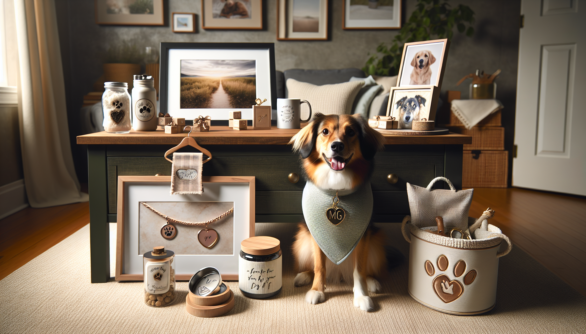

If you are shopping for a dog lover, you already know one thing: gifts that celebrate their pup are almost always a hit. Dogs are family, and the most memorable presents are the ones that feel personal, meaningful, and made just for them. The good news is that you do not have to spend a fortune to find something special. There are plenty of personalized dog gifts under $50 that feel thoughtful, unique, and genuinely exciting to open.
Whether you are buying for a birthday, holiday, adoption anniversary, Mother's Day, Father's Day, or just because, custom pet gifts add an extra layer of love. A personalized item can turn an everyday accessory into a keepsake, and even a simple gift becomes more heartfelt when it includes a dog's name, photo, or custom design.
In this guide, we are sharing some of the best personalized dog gifts under $50 for pet owners, dog lovers, and thoughtful gift shoppers. From practical everyday favorites to decorative treasures, these affordable picks are perfect for celebrating the bond between people and their pups.
There is something undeniably charming about a gift made with a specific dog in mind. Personalized dog gifts go beyond generic pet products because they show effort, care, and attention to detail. Instead of grabbing a standard item off a shelf, you are choosing something tailored to the recipient and their beloved companion.
For many dog parents, a customized gift feels emotional in the best way. Seeing their pup's name on a bandana, a portrait on a mug, or a custom illustration hanging in their home instantly makes the gift more meaningful. It says, “I know how much your dog means to you.”
Another reason these gifts are so popular is that they work for nearly every type of recipient. Some people love practical pet accessories they can use every day, while others prefer decorative keepsakes that celebrate their furry best friend. Personalized dog gifts can do both, and with so many affordable options available, staying under budget is easier than ever.
One of the best personalized dog gifts under $50 is a custom dog bandana. These are stylish, useful, adorable in photos, and easy to personalize with a dog's name, nickname, or a fun phrase. They make wonderful gifts because they are both affordable and instantly charming.
Bandanas are especially popular for birthdays, holidays, adoption celebrations, and pet photo shoots. A personalized bandana can make a pup stand out at the dog park or add a festive touch to family gatherings. They are also a great option if you want something lightweight and easy to mail.
Other personalized accessories in this price range include engraved collars, custom leash holders, monogrammed leash pouches, and name-based bow ties. These gifts are practical enough for daily use but still feel special because they are designed specifically for one dog.
If you want a personalized dog gift that is both thoughtful and functional, engraved pet tags are an excellent choice. A custom tag can include the dog's name, owner's phone number, and even a cute saying or design that matches the dog's personality.
Pet tags are ideal for gift shoppers who want to give something useful without sacrificing style. Today, many engraved tags come in beautiful shapes, colors, and finishes, from classic bone silhouettes to modern minimalist circles. Some even feature custom illustrations or breed-specific artwork.
Since pet tags are usually budget-friendly, they pair well with another small custom item if you want to create a gift bundle under $50. For example, an engraved tag plus a matching personalized bandana can make a complete, polished present that feels much more expensive than it is.
This type of gift is especially appreciated by new dog owners, recent adopters, and anyone who loves combining safety with personal style.
For dog lovers who proudly talk about their pup every chance they get, custom drinkware is always a fun and useful gift. Personalized mugs, tumblers, and cups featuring a dog's name, breed, or illustration are affordable favorites that fit easily within a $50 budget.
A custom dog mug can brighten up a morning coffee routine and become a daily reminder of a beloved pet. Tumblers are another smart option for busy dog parents who are always on the go, whether they are heading to work, taking their dog on a walk, or driving to the park.
These gifts work especially well because they blend pet love with everyday life. Instead of sitting on a shelf, they become part of a routine. That makes them practical, personal, and memorable all at once.
If you are looking for a gift with emotional impact, personalized pet portrait prints are one of the best options available. These custom pieces often feature a dog's photo transformed into artwork, whether in a modern minimalist style, watercolor effect, or playful illustrated design.
Pet portrait prints make fantastic gifts because they feel deeply personal while still staying affordable. Many custom prints, digital downloads, and small framed options are available for under $50, making them an excellent choice for birthdays, holidays, or memorial gifts.
Other personalized dog-themed home decor can also make a big impression. Think custom signs, dog name plaques, personalized ornaments, or small wall art pieces that celebrate a pup's place in the family. These items are especially meaningful for pet owners who love decorating their homes with reminders of their dog.
If you want a gift that feels heartfelt and display-worthy, custom pet decor is a strong choice.
Some of the best gifts are the ones people use every single day, and that is exactly why personalized feeding essentials are so popular. Custom treat jars, dog bowls, placemats, and food scoop sets can all make practical yet charming gifts for pet parents.
A personalized treat jar is especially fun because it turns a basic household item into something decorative and unique. Add the dog's name or a cute custom label, and suddenly a simple container becomes a gift-worthy piece for the kitchen.
Custom bowls and feeding mats are also excellent for new puppy owners or anyone who has recently moved into a new home with their dog. These gifts feel useful, thoughtful, and tailored to everyday life with a pet.
Because feeding essentials are often available in a wide range of styles, you can choose something that matches the recipient's home decor, from farmhouse-inspired to clean and modern.
Not every custom dog gift has to be for the dog directly. Some of the most appreciated presents are personalized keepsakes made for the humans who love them. These can include custom keychains, photo ornaments, tote bags, phone cases, or small framed pieces featuring a dog's name or image.
These keepsakes are wonderful because they let dog lovers carry a reminder of their pup wherever they go. A personalized keychain or tote bag may seem simple, but when it features a beloved dog's face or name, it becomes instantly more meaningful.
Keepsakes are also ideal if you are shopping for someone who already has all the pet essentials they need. Instead of another toy or treat, you can give them something sentimental that celebrates their bond with their dog in a stylish, everyday way.
With so many great options available, choosing the right gift comes down to the recipient's personality and lifestyle. Start by thinking about whether they prefer practical items, decorative keepsakes, or wearable accessories for their dog. A custom bandana may be perfect for someone who loves sharing pet photos, while a pet portrait print may be better for someone who enjoys home decor.
You should also consider the dog's personality. Is the pup playful, stylish, outdoorsy, or cuddly? Gifts that reflect a dog's unique charm often feel even more personal. Matching the gift to the dog's vibe can make it more fun and memorable.
Finally, pay attention to customization details. Accurate spelling, clear photos, and thoughtful design choices can make all the difference. The best personalized gifts feel intentional, polished, and made with care.
Staying under $50 does not mean settling for something ordinary. With the right pick, you can give a gift that feels custom, premium, and full of heart.
The best personalized dog gifts under $50 prove that meaningful gifting does not have to be expensive. From custom bandanas and engraved tags to pet portraits, treat jars, and keepsakes for dog parents, there are plenty of affordable ways to celebrate the love people have for their pups.
Personalized gifts stand out because they capture something specific and special. They turn everyday pet products into treasured items and make dog lovers feel truly seen. Whether you are shopping for a holiday, birthday, adoption day, or a spontaneous surprise, a custom dog gift is a thoughtful way to make someone smile.
If you are ready to find a gift that is personal, charming, and budget-friendly, explore custom options designed with pet lovers in mind.
Shop personalized pet products at SnoutAndAbout on Etsy.